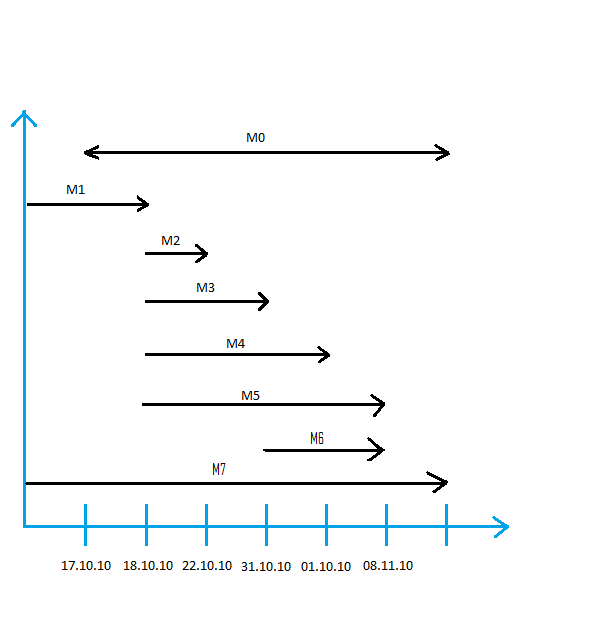

Oblig 2 - Gruppe 31
Prosjektbeskrivelse
Problemstilling:
- Hvordan skal vi utvikle en best mulig info/fanside for en MacGyver tv-seri?
Prosjektets formål
- Legge ut informasjon om de viktigste karakterene i serien, info om
episoder og hva serien i hovedtrekk handler om.
Produktmål
- Lage en info/fanside for MacGyvar tv-serien, samt utvikle styringsdokumenter
og dokumentasjon for prosjektarbeidet.
For å oppnå ønsket resultat vil vi benytte web-timene til å jobbe i grupper hvis dette er
gunstig, men vi vil også benytte Git og Dropbox slik at vi kan jobbe asynkront.
- Vi har laget et ansvarskart og en samarbeidsavtale som også beskriver måten vi skal jobbe på.
Prosessmål
- Vi ønsker å utvikle egne ferdigheter på områder som html og css koding,
samt få en forståelse og kjennskap til hvordan man jobber med på/med prosjekt.
(Utarbeider dokumentasjon, samarbeid, styring, osv).
Samarbeidsavtale
Vi i gruppe 31 (webprosjekt) er alle enige om å samarbeide godt og å gjøre alt hva vi kan for et godt samarbeid og det best mulige resultatet. Dette skal vi gjøre ved å være enige om følgende punkter:
Rolledeling, ansvarsområder:
For at alle skal bli fornøyd og at vi skal gjøre best mulig arbeid, så skal alle gå sammen å bli enige om oppgave fordeling og tilpasse oppgavene til hvem kan gjøre hva. Vi skal få like/ om ikke nesten like store oppgaver med like mye ansvar.
Hvordan fordele arbeidet rettferdig:
Alle skal ha noe å si når det gjelder arbeidsfordeling, ved starten av prosjektoppgaven går gruppen sammen og fordeler oppgaver slik at vi effektivt kan gjøre den både bra og effektivt
Arbeidsinnsats i timer per uke:
I og med at vi alle har satt oss opp på å jobbe med faget i 5-10 timer i uken så betyr dette at alle fra gruppe 31 skal jobbe cirka 5 til 10 i uken. På denne måten klarer vi å jobbe effektivt og nøye.
Prosjektledelse:
Med mest kunnskap om hovedside tema er ansvaret blitt gitt over til en ”gruppeleder” Thomas Kroken. Allikevel har alle lov til å si meninger og er like i gruppen.
Møtetider og frekvens:
Nye møtetider blir satt fra gang til gang, og medlemmer i gruppe 31 er pliktige til å møte opp i alle møter satt opp. Selv om sykdom og andre grunner hvor man ikke har muligheter til å møte opp, så skal man helst gi beskjed om dette til enten gruppeleder eller en annen i gruppa.
Andre viktige ting:
Kommer underveis i prosjektet…
Ansvarskart
20.10-10
Martin Mørk:
- Ansvarskart
- Samarbeidsavtale
Thomas Kroken:
- Gruppeleder
- Aktivitetplan
- Lage prosjektside
Thomas Hagen:
- Milepælsplan
- Prosjektbeskrivelse
Adeela Afzal:
- Risikoplan
- Prosjektdagbok
01.11-10
Martin Mørk:
Thomas Kroken:
- Begrunnelse for designvalg
- Logo
Thomas Hagen:
- Milepælsplan
- Prosjektbeskrivelse
Adeela Afzal:
- Risikoplan
- Prosjektdagbok
Dette ansvarskartet skal og kommer til å bli oppdatert underveis i prosjektet. Ettersom vi får nye oppgaver kommer vi til å sette opp flere ansvar for hver enkel person.
Milepælsplan

- M0-17.10.10 - Få opp prosjektsiden, skrive problemstilling og foreløpig dokumentasjon. (arbeide videre
med gitte oppgaver under hele prosjektperioden).
- M1-18.10.10 - Innlevering lev. 1. Møtes for godkjenning av gruppen, og ansvarsfordeling videre.
- M2-18.10.10 - Planlegge websiden ???
- M3-22.10.10 - Planlegge webside og innhente informasjon.
- M4-31.10.10 - Få opp siden. 1.0 og arbeide videre med denne.
- M5-01.11.10 - Gruppemøte. Synspunkter, kommentarer, forbedringspotensial for side osv.
- M6-08.11.10 - Innlevering lev. 2.
- M7-30.11.10 - Innlevering av prosjekt og Sluttrapport
- M8-Uke 45/46 ? - Fremlegging av prosjekt.
Aktivitetsplan
M0-17.10.10
Alle på gruppa jobber med arbeidsoppgaver de har fått utdelt. Sammarbeide gjennom dropbox og GIT. Prosjketsiden skal lastes opp før 18.10.10
M1-18.10.10
- Gruppa møtes å for en siste finpussing på leveranse 1. Alle går over prosjektsiden før man møtes og kommer med innspill til evt. endringer som kan gjøres før man leverer oppgaven.
- Oppgaven leveres inn.
M2-18.10.10
Gruppemøte:
- Hvem kan hva(hvilke egenskaper har vi).
- Videre arbeidsfordeling utifra forskjellige egenskaper.
Hva skal gjøres til neste gang?(fordele oppgaver):
- Skisse web-side.
- Innhente informasjon som skal brukes i web-side.
- Lage sidestruktur.
M3-22.10.10
Gruppemøte:
- Hva har blitt gjort siden sist.
- Gruppa kommer med evt. endringer til sidestruktur, innhold på side ol.
- Planlegge videre arbeid som skal gjøres.
- Sette frist for førsteutkast på side(lastes opp)
M4-31.10.10
Frist for førsteutkast til webside er satt rundt 31.10 avhengig av hvordan oppgaven ser ut i leveranse 2.
Gruppemøte:
- Snakker om førsteutkast.
- Hva kan gjøres bedre(gruppe kommer med innspill)
- Testpersoner(en eller to på gruppen får i oppgave å samle en gjeng med testpersoner og teste siden)?
- Hva mer kan vi ha på siden.
- Planlegge videre arbeid frem mot dethline.
M5-01.11.10
Testing av webside skal gjennomføres i denne perioden.
Gruppemøte:
- Resultater fra testing(hva kan forbedres).
- Hvor står vi? Ligger vi bra ann, hvordan når vi målet vårt?
- Planlegge videre.
M6-08.11.10
Gruppemøte
M7-30.11.10
- Gruppemøte
- Sluttraport
- Fremføring
Risikoplan
Sykdom:
- Risikonivå: Det er ganske stor sannsynlighet for at minst et av gruppens medlemmer blir syke før prosjektet avsluttes, i verste fall kan dette skje når det nærmer seg viktige frister.
- Konsekvens – Dette kan føre til at leveransene ikke blir ferdig innen avtalt frist, noe som videre fører til mulig trekk i karakter.
- Hvordan unngå – I noen tilfeller kan sykdom unngås, ved å spise sunt o.l., men sykdom kan også forekomme til tross for dette.
- Hvordan redusere skadeomfanget – For at sykdom hos et eller flere av gruppens medlemmer skal påvirke prosjektet i minst mulig grad, er det viktige med en jevn oppgavefordeling, dermed avhenger ikke alt av en person. Det er også viktig med regelmessige gruppemøter, slik at alle har oversikt også for eksempel over styringsdokumentene de ikke har hovedansvar for. I tillegg til dette er det også viktig med god planlegging.
Medlemmer slutter:
- Risikonivå – Det er lite sannsynlighet for at et eller flere gruppemedlemmer slutter faget, men vi kan fortsatt ikke utelukke det helt.
- Konsekvens – Dette kan føre til forsinkelser i arbeidet, resten av gruppen må sannsynligvis arbeide ekstra hardt for å bli ferdig i tide.
- Hvordan redusere skadeomfanget – Også i dette tilfelle, er det viktig å fordele oppgavene jevnt. Vi må sikre at ikke alt avhenger av et medlem. Hvis noen på gruppa slutter er det best å prioritere det som er viktigst. I noen tilfeller, når det åpenbart er fare for å ikke bli ferdig i tide, kan det være lurt å begrense oppgaven / problemstillingen.
Tekniske problemer:
- Risikonivå – Tekniske problemer kan forekomme, men sannsynligheten for at dette går utover prosjektet, avhenger av de forholdsreglene vi tar.
- Hvordan redusere skadeomfanget – Hvis vi tar backup ofte, vil ikke tekniske problemer skape store vanskeligheter. Programmer som git og dropbox vil også være hjelpsomme i slike situasjoner.
Faglige uklarheter / vanskeligheter:
- Det er mulig at vi underveis oppdager noen problemer, med det faglige stoffet. I slike tilfeller kan vi hjelpe hverandre og / eller vi kan få hjelp på datalaben.
Uenigheter:
- Det kan forekomme uenigheter mellom gruppemedlemmene, for eksempel om hvordan oppgaven skal utføres. Da er det viktig at alle blir hørt, det er som regel mulig å komme fram til en løsning som alle er fornøyd med.
Prosjektsdagbok
Torsdag 30. september
Thomas og Martin kontaktet resten av gruppen og vi bestemte at vi skulle møtes på tirsdag 5. oktober.
Tirsdag 5. oktober
Gruppens medlemmer ble kjent med hverandre og vi diskuterte hva slags funksjon nettstedet vårt skulle ha. Ideen om å lage en nettbutikk ble forkastet siden ingen av gruppemedlemmene hadde særlig interesse for dette. Vi bestemte at vi skulle lage en informasjonsside og det ble foreslått at tema for denne siden kunne være en serie eller en film, men vi tok ikke noe endelig avgjørelse. Vi avtalte at vi skulle tenke på mulige temaer før neste gruppemøte.
Mandag 11. oktober
Vi bestemte at tema for websiden skulle være tv – serien MacGyver. Grunnen for dette valget var en interesse for serien hos noen av gruppens medlemmer. På dette møtet fordelte vi også oppgavene, det ble bestemt hvem som skulle ha ansvar for hvilke styringsdokumenter.
Mandag 18. oktober
Messagebox.php